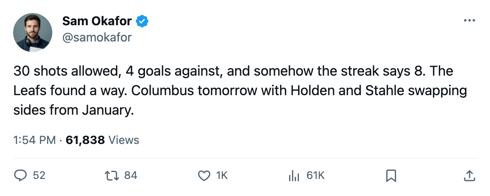

LEAFS 5, ISLANDERS 4: 8 straight, 4 goals allowed, and 3 of the next 5 are division games
Toronto survives a 30-shot night from New York, extends the longest streak in the league, and turns toward Columbus tomorrow with a pair of reunions on the sheet
 Sam OkaforLeafs beat reporter · Queen City Telegram
Sam OkaforLeafs beat reporter · Queen City Telegram
Toronto beat  New York Islanders 5-4 at home on 2005-03-18, extending its streak to 8 games, the longest active run in the league. The Islanders outshot the
New York Islanders 5-4 at home on 2005-03-18, extending its streak to 8 games, the longest active run in the league. The Islanders outshot the  Toronto Maple Leafs 30-20, the most the Leafs have allowed in any of their last 10 games and the most since a 2-1 loss to Carolina on 2005-03-01.
Toronto Maple Leafs 30-20, the most the Leafs have allowed in any of their last 10 games and the most since a 2-1 loss to Carolina on 2005-03-01.
The 4 goals against stand out against the rest of the run. In the seven wins before New York, Toronto allowed 2 or fewer in each game. The only outlier was 2 in a 6-2 win at Edmonton on 2005-03-10. The streak is now 8-0-0 with 34 goals for and 12 against across those 8 games.
 Columbus Blue Jackets visits on 2005-03-20, the first meeting between these clubs this season. The Blue Jackets are 24-34-6, 70 points, 5th in the Central. Two names on the sheet tie the clubs together:
Columbus Blue Jackets visits on 2005-03-20, the first meeting between these clubs this season. The Blue Jackets are 24-34-6, 70 points, 5th in the Central. Two names on the sheet tie the clubs together:  Josh Holden69 [405] is now Columbus and Andreas Stahle70 [1001028] is now Toronto. Both were traded on 2005-01-25. Holden has 73 points on the penalty sheet (108 PIM in 72 games), the most among the Blue Jackets. Stahle has played 4 games and dressed 0 of them for the Leafs this season.
Josh Holden69 [405] is now Columbus and Andreas Stahle70 [1001028] is now Toronto. Both were traded on 2005-01-25. Holden has 73 points on the penalty sheet (108 PIM in 72 games), the most among the Blue Jackets. Stahle has played 4 games and dressed 0 of them for the Leafs this season.
Columbus goaltender  Pascal Leclaire82 [1202] sits on the Bureau's Development Index risers list at +4, reading 86 overall against a base of 83. He has 46 games this season.
Pascal Leclaire82 [1202] sits on the Bureau's Development Index risers list at +4, reading 86 overall against a base of 83. He has 46 games this season.
 Buffalo Sabres comes to Toronto on 2005-03-22,
Buffalo Sabres comes to Toronto on 2005-03-22,  Boston Bruins hosts on 2005-03-24, and
Boston Bruins hosts on 2005-03-24, and  Carolina Hurricanes on 2005-03-25. Three division games in 4 days. Toronto leads Buffalo 4-0-0 in the season series and Boston 2-2-0. The Carolina meeting will be the first this season.
Carolina Hurricanes on 2005-03-25. Three division games in 4 days. Toronto leads Buffalo 4-0-0 in the season series and Boston 2-2-0. The Carolina meeting will be the first this season.
Today is what the calendar has as the trade deadline. No moves have been confirmed for Toronto. The roster is unchanged from the last edition.
| game | date | opponent | result | shots for | shots against |
|---|---|---|---|---|---|
| 1 | 2005-03-18 | NYI | W 5-4 | 20 | 30 |
| 2 | 2005-03-15 | VAN | W 3-1 | - | - |
| 3 | 2005-03-13 | CGY | W 5-1 | - | - |
| 4 | 2005-03-10 | EDM | W 6-2 | - | - |
| 5 | 2005-03-08 | VAN | W 3-1 | - | - |
| 6 | 2005-03-06 | BUF | W 5-1 | - | - |
| 7 | 2005-03-04 | OTT | W 5-1 | - | - |
| 8 | 2005-03-03 | FLA | W 3-1 | - | - |
